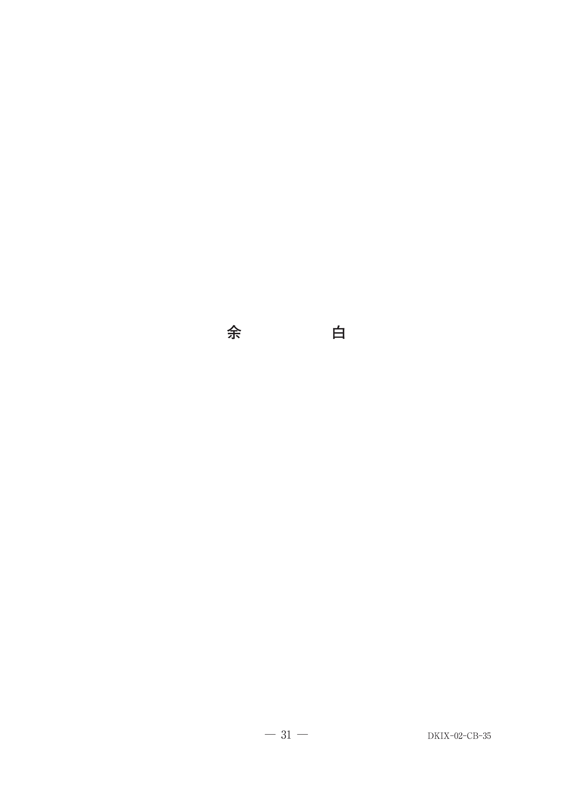
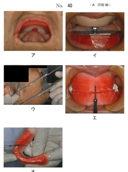
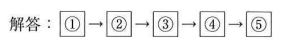

無歯顎患者は指標になる歯が存在しないため、上下対に製作された咬合床にて上下顎の三次元的空間位置関係を記録し、咬合器上に転写して義歯を製作する。
| 構成要素 | 材料 | 役割 |
|---|---|---|
| 基礎床 | 常温重合レジン | 咬合堤を支える基底部 |
| 咬合堤（ろう堤） | パラフィンワックス | 顎間関係を記録する部分 |
模型基底面が仮想咬合平面とほぼ平行になるように調整する。咬合堤の上面が模型基底面とほぼ平行になることで作業効率が向上する。
75歳の男性。下顎義歯による痛みを主訴として来院した。8年前に上下顎全部床義歯を製作し問題なく使用していたが、2週前から痛みを感じるようになったという。検査の結果、新義歯を製作することとした。実施の順番に並べた製作過程の写真（別冊No.35）を別に示す。
①に入るのはどれか。1つ選べ。

【解説】咬合床製作後、最初に行うのは垂直的顎間関係の計測（咬合高径の決定）。ゴシックアーチ描記は水平的顎間関係の記録で、垂直的顎間関係の決定後に行う。
80歳の女性。咀嚼困難を主訴として来院した。使用中の義歯は12年前に装着したという。診察と検査の結果、上下顎全部床義歯を新製することとした。製作過程の一連の写真（別冊No.40）を別に示す。
製作過程を実施の順番に並べよ。


【解説】全部床義歯の製作順序：印象採得→咬合床製作→顎間関係の記録→人工歯排列→ろう義歯試適→埋没・重合→義歯装着。写真の内容に応じて正しい順序を選択する。